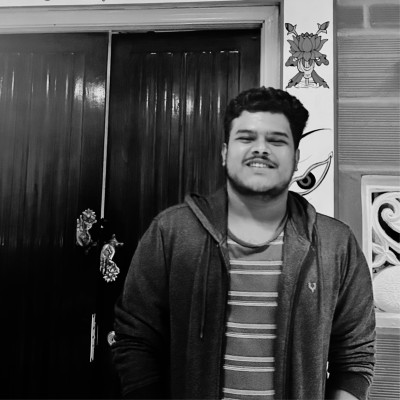
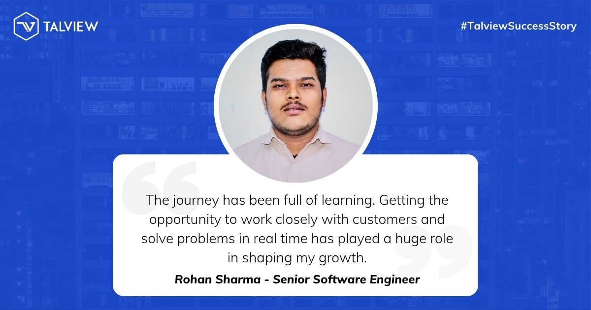
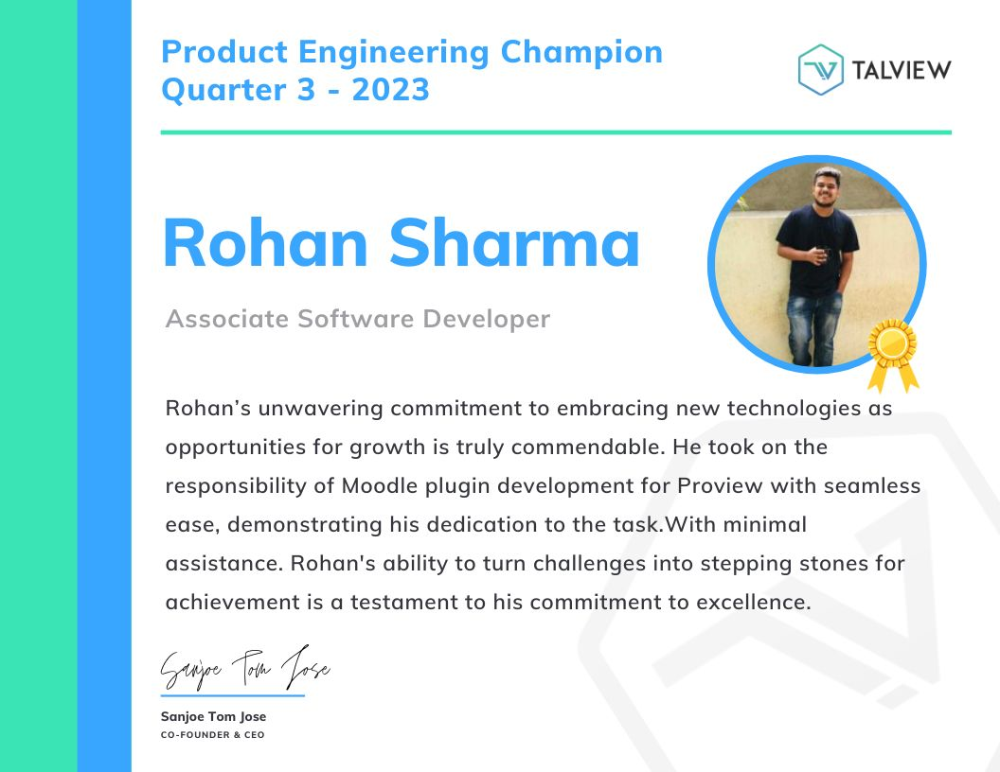
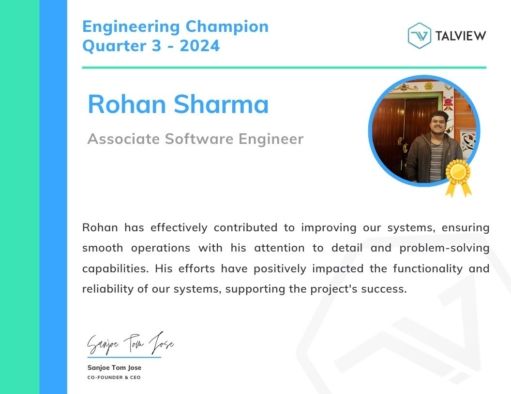
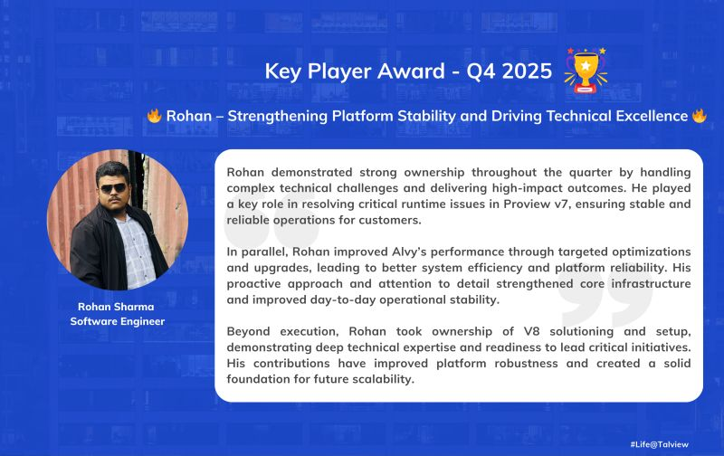

Rohan Sharma
Sitoula
Senior Software Engineer in Bengaluru — architecting distributed systems and building AI that watches, listens, and understands. This is the story so far.
scroll"The best infrastructure is invisible.
You only notice it when it's gone."
Every system begins
as a question.
Mine was simple: how far can software see? Over three years I've chased that question through production AI pipelines, event-driven microservices, and real-time infrastructure serving Fortune 500 clients — while keeping the lowest SLA breach rate on my team.
Along the way: a patented agentic AI proctor that reached 90% human parity, and systems carrying over a million sessions a year.
Instruments of
the trade.
Languages & Runtimes
AI & Machine Learning
Distributed Systems & APIs
Cloud & Infrastructure
Data & Real-Time
Observability & Testing
The intern who
rewired the pipes.
I joined Talview as an engineering intern in January 2023 and went looking for friction. The first thing I found: legacy REST endpoints dragging down every page load. Migrating them to GraphQL cut API response latency by 40% — and taught me that the fastest code is often the code you delete.
Then came observability. I wired Sentry distributed tracing across the PHP and Node.js applications, and incident triage time — the frantic "where is it broken?" phase — dropped by half. Bugs stopped hiding.
The last mark I left as an intern was cultural: introducing Jest and test-driven development, taking coverage from 40% to 75%. Six months later, the internship became a job.
Five thousand exams,
all at once.
As an Associate Engineer, the problems changed shape: no longer "make this endpoint faster," but "make this system survive exam day." I built event-driven microservices on Node.js, Kafka, Temporal, and GraphQL that held steady under 5,000+ concurrent exam sessions — where a dropped event means a candidate's worst day.
Proctoring had to go where the students were, so I integrated our workflows into five global LMS platforms — Moodle, Canvas, Brightspace, Intellum — via LTI and custom browser extensions, each with its own quirks and none with good documentation.
In between, I wrote a video transcoding service (MKV/MKA to MP4) that cut composition costs by 20%, and wired up Stripe and Lemon Squeezy so certifications became a product people could actually buy, end to end.
Teaching software
to pay attention.
Then came the project that changed everything: Alvy, a patented, multimodal agentic AI proctor I spearheaded — built on LLMs, vision models, LangChain, and LlamaIndex. It watches video, listens to audio, reads screens, and reasons about what it sees. In malpractice detection, it reached 90% parity with human proctors.
Getting there meant designing real-time object detection pipelines across three simultaneous feeds — camera, microphone, and screen — flagging unauthorized items and behaviors in high-stakes assessments as they happen, not after.
Around it, I scaled the live interview and proctoring infrastructure past a million sessions a year on Twilio, LiveKit, and Azure Communication Services — with facial recognition, photo-ID verification, and dual-camera monitoring keeping every one of those sessions honest.
Now I draw
the maps.
As a Senior Engineer, the work moved from building services to designing the city they live in. I led the design and scaffolding of eight core microservices — auth, payments, notifications, session management, media intelligence, events, incident generation, and booking — on Temporal and AWS Lambda, spanning gRPC and REST, with tenant federation, multi-region deployments, and database sharding built in from day one.
The blueprints matter as much as the buildings: I write the Architecture Decision Records that shape roadmaps across multiple squads, cutting technical debt company-wide. I built custom CI/CD tooling for automated code review enforcement that dropped review turnaround by 35%, and I run backlog grooming and sprint planning for the core proctoring squad.
I also champion the tools that make teams faster — establishing TDD standards and driving adoption of AI coding assistants like Codex and Claude. My latest build: a multimodal RAG support agent on Azure OpenAI and LangChain that troubleshoots live assessment issues straight from our internal knowledge base. Through all of it, one number I protect: the lowest SLA breach rate on the team, for Fortune 500 clients who notice.
Things built
for the joy of it.
blocknote-py — an open-source Python library for parsing BlockNote documents. 3,000+ downloads on PyPI.
Research — "Fine-Grained Classification for Emotion Detection Using Advanced Neural Models and GoEmotions Dataset," published in the Journal of Soft Computing and Data Mining, 2024.
Study — MCA (8.9 CGPA) and BCA (9.7 CGPA), Sikkim Manipal Institute of Technology.
Kept from
along the way.




The next chapter
is unwritten.
If you're building something worth building — let's talk.